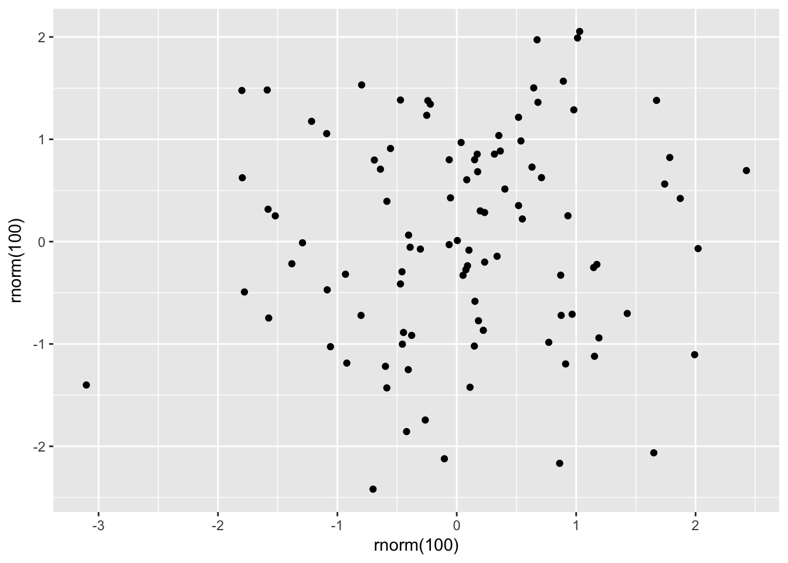
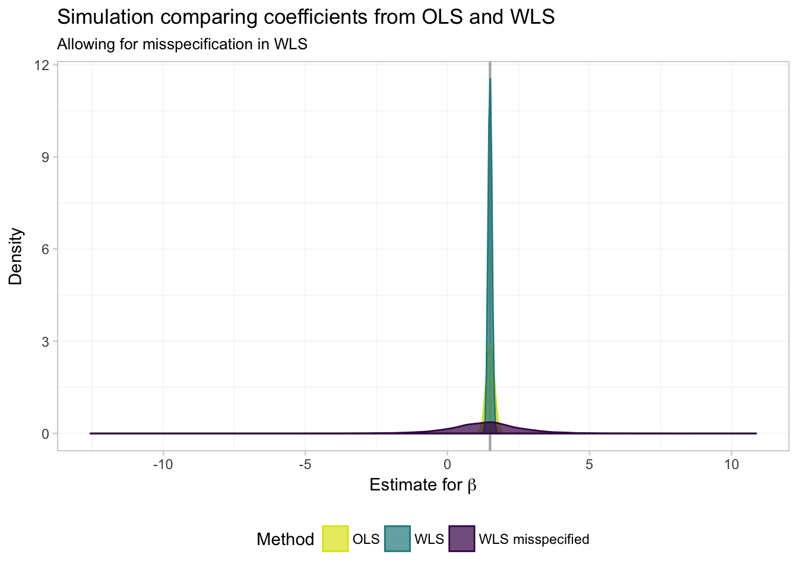
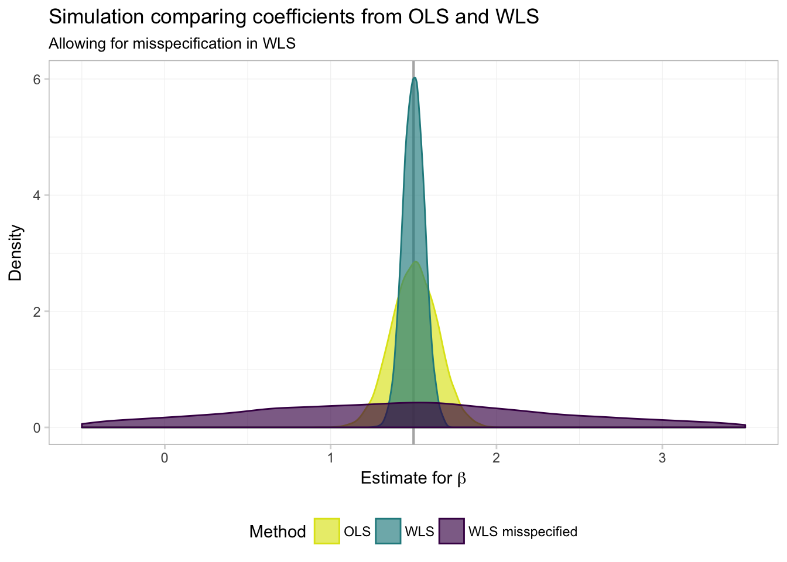

Section 7: GLS
Admin
New this week
Starting this week, I am going to introduce you to a few tools that I’ve found useful for empirically minded economic research.1 Feel free to ask for specific topics or to make recommendations of your own. I’ll include this part last in the section notes, as it is not as much of a priority as learning to code in R.
Problem set 1
After grading your problem sets, I have a few comments/requests:
- Overall, great job! Solid coding and, for the most part, nice discussions when the problem set requested them.
- Our strict exogeneity assumption is about the conditional mean of the disturbance term. The unconditional mean of the residuals will always be zero when you estimate via OLS with an intercept. The residuals will (generally) have a non-zero (unconditional) mean when you exclude the intercept.
- Our assumption about linearity is about the parameters and the disturbance—not the covariates (meaning squaring a covariate is fair game).
- When you demean your data, you’ve applied the FWL theorem and do not need an intercept.
- Please separate your answers outside of your R comments/code. And please don’t answer the questions in your R comments.
What you will need
Packages:
- Previously used:
dplyr,lfe,readr,magrittr,parallel,lfe,ggplot2,ggthemes,viridis
Last week
Last week we discussed the fantastic figure-making package ggplot2.
Follow up: ggplot2 has a helpful function named qplot(). qplot() is less customizable than the standard functions that you stack on top of ggplot(), and it deviates from the syntax. So why am I telling you about it? Because it is nice for making quick graphs.
ggplot2::qplot(x = rnorm(100), y = rnorm(100), geom = "point")
I still think the standard ggplot() + ... functionality is best, but if you want to make a quick plot, qplot() can be helpful.
This week
This week we will cover generalized least squares (GLS), focusing on a special case called weighted least squares (WLS). And we will run more simulations (with pretty graphs)!
GLS
Up to this point, we have stuck with ordinary least squares (OLS). Today, we will talk about generalized least squares (GSL). Specifically, we will discuss weighted least squares (WLS), which—as in the case with OLS—is a special case of GLS.
BLUE estimators
Let’s return to OLS land for a moment: we assumed our errors are spherical—homoskedastic and uncorrelated—which we can also write
\[ \mathop{\boldsymbol{E}} \left[ \boldsymbol{\varepsilon} \boldsymbol{\varepsilon}^\prime | \mathbf{X} \right] = \sigma^2 \mathbf{I}_n \]
Under this assumption, we showed OLS is BLUE (best2 linear unbiased estimator). But as you saw in your first problem set, there are times where our errors are not exactly spherical. What happens in this case—i.e., what happens when we relax our spherical-error assumption? OLS is still unbiased,3 but it will no longer be BLUE (and your inferential statistics might be bad).
So where do we go from here? Instead of making the spherical error assumption, let’s make a generalized assumption about the disturbances:
\[ \mathop{\boldsymbol{E}}\left[ \boldsymbol{\varepsilon} \boldsymbol{\varepsilon}^\prime | \mathbf{X} \right] = \sigma^2 \boldsymbol{\Omega}(\mathbf{X}) \]
If \(\boldsymbol{\Omega}(\mathbf{X})\) is known and positive definite, then GLS is BLUE (where the estimator is \(\left(\mathbf{X}^{\prime}\boldsymbol{\Omega}^{-1}\mathbf{X}\right)^{-1}\mathbf{X}^{\prime}\boldsymbol{\Omega}^{-1}\mathbf{y}\)).4 So, if you happen to know your disturbances are non-spherical (somewhat likely), and if you know the exact form of \(\boldsymbol{\Omega}(\mathbf{X})\) (somewhat unlikely), then you should opt for GLS. Why? GLS is the more efficient estimator in this world. (Recall the b in BLUE: OLS is no longer best, and GLS is now best.) In practice, this efficiency should translate to more power/smaller standard errors.
Let’s check out a special case of GLS: weighted least squares (WLS).
WLS
Let’s impose a bit of structure on our \(\boldsymbol{\Omega}(\mathbf{X})\) matrix (the variance-covariance matrix of our disturbances). In particular, assume the disturbances are independent. This assumption implies the off-diagonal elements of \(\boldsymbol{\Omega}(\mathbf{X})\) are zeros (in other words: \(\boldsymbol{\Omega}(\mathbf{X})\) is diagonal). Now let \(\omega_i(\mathbf{X})\) denote the \(i\)th diagonal element of \(\boldsymbol{\Omega}(\mathbf{X})\). Then
\[ \mathop{\boldsymbol{E}}\left[ \boldsymbol{\varepsilon} \boldsymbol{\varepsilon}^\prime | \mathbf{X} \right] = \sigma^2 \boldsymbol{\Omega}(\mathbf{X}) = \sigma^2 \mathop{\text{diag}}\left\{ \omega_i(\mathbf{X})\right\} \]
or
\[ \mathop{\boldsymbol{E}}\left[ \varepsilon_i^2 \right] = \sigma^2\omega_i(\mathbf{X}) \]
Think about the diagonal matrix and the GLW/WLS estimator. What is WLS doing? It is just weighting each observation by
\[ w_i = \dfrac{1}{\sqrt{\omega_i (\mathbf{X})}} \]
and then running OLS (on the weighted dataset) to recover the weighted least squares (WLS) estimator. In other words, we make two transformations
\[\tilde{y}_i = \dfrac{y_i}{\sqrt{\omega_i(\mathbf{X})}} \quad \text{and} \quad \tilde{x}_i = \dfrac{x_i}{\sqrt{\omega_i(\mathbf{X})}}\]
and then regress \(\tilde{y_i}\) on \(\tilde{x_i}\).
To see these steps a bit more formally:
\[\begin{align} \mathbf{b}_\text{gls} &= \left(\mathbf{X}^{\prime}\boldsymbol{\Omega}^{-1}\mathbf{X}\right)^{-1}\mathbf{X}^{\prime}\boldsymbol{\Omega}^{-1}\mathbf{y} \\&= \left(\mathbf{X}^{\prime}\mathbf{W}\mathbf{X}\right)^{-1}\mathbf{X}^{\prime}\mathbf{W}\mathbf{y} \\&= \left(\mathbf{X}^{\prime}\mathbf{C}^{\prime}\mathbf{C}\mathbf{X}\right)^{-1}\mathbf{X}^{\prime}\mathbf{C}^{\prime}\mathbf{C}\mathbf{y} \\&= \left((\mathbf{C}\mathbf{X})^{\prime}\mathbf{C}\mathbf{X}\right)^{-1}(\mathbf{C}\mathbf{X})^{\prime}\mathbf{C}\mathbf{y} \\&= \left(\widetilde{\mathbf{X}}^{\prime}\widetilde{\mathbf{X}}\right)^{-1}\widetilde{\mathbf{X}}^{\prime}\widetilde{\mathbf{y}} \end{align}\]WLS simulation
Let’s write a simulation in R that can compare OLS and WLS via their coefficient estimates and their efficiency. What do we need to do for this simulation?
- Generate a population of data (whose data-generating process matches our assumptions).
- Draw random samples from the population.
- Estimate OLS and WLS for each sample.
- Repeat.
- Plot the distributions of coefficient estimates.
- Compare the distributions via astute observation.
First things first: my R setup
# Setup ----
# Options
options(stringsAsFactors = F)
# Packages
library(dplyr)##
## Attaching package: 'dplyr'## The following objects are masked from 'package:stats':
##
## filter, lag## The following objects are masked from 'package:base':
##
## intersect, setdiff, setequal, unionlibrary(magrittr)
library(parallel)
library(ggplot2)
library(ggthemes)
library(viridis)
library(lfe)## Loading required package: Matrix# Directory
setwd("/Users/edwardarubin/Dropbox/Teaching/ARE212/Section07")
# My ggplot2 theme
theme_ed <- theme(
legend.position = "bottom",
panel.background = element_rect(fill = NA),
panel.border = element_rect(fill = NA, color = "grey75"),
axis.ticks = element_line(color = "grey85"),
panel.grid.major = element_line(color = "grey95", size = 0.2),
panel.grid.minor = element_line(color = "grey95", size = 0.2),
legend.key = element_blank())Second things second: let’s write a few functions that will be useful in this simulation.
# Functions ----
# Function to convert tibble, data.frame, or tbl_df to matrix
to_matrix <- function(the_df, vars) {
# Create a matrix from variables in var
new_mat <- the_df %>%
# Select the columns given in 'vars'
select_(.dots = vars) %>%
# Convert to matrix
as.matrix()
# Return 'new_mat'
return(new_mat)
}
# Function for OLS coefficient estimates
b_ols <- function(y, X) {
# Calculate beta hat
beta_hat <- solve(t(X) %*% X) %*% t(X) %*% y
# Return beta_hat
return(beta_hat)
}We will use the same data-generating process (DGP) that Max used in his notes:
- \(x \sim \text{Uniform}(0,\, 2000)\)
- \(\varepsilon \sim \mathop{N}\left(0,\, 400 \cdot \frac{1}{100}x^2\right)\)
- \(\alpha = 0.5\)
- \(\beta = 1.5\)
Notice that this setup implicitly defines \(\sigma^2 = 400\) and \(\omega_i = \frac{1}{100}x_i^2\).
Let’s now create our population.
# Set the seed
set.seed(12345)
# Set population size, N
N <- 1e5
# Set alpha and beta
alpha <- 0.5
beta <- 1.5
# Create the population data: intercept (i) and X
pop_df <- data.frame(
i = 1,
x = runif(n = N, min = 0, max = 2000)
) %>% tbl_df()
# Generate error term, e
pop_df %<>% mutate(
e = rnorm(N, mean = 0, sd = sqrt(4 * x^2)))
# Calculate y
pop_df %<>% mutate(y = alpha + 1.5 * x + e)Let’s also add the weights that we discussed previously, i.e.,
\[ w_i = \dfrac{1}{\sqrt{\omega_i (\mathbf{X})}} = \dfrac{10}{x} \]
# Add weights
pop_df %<>% mutate(w = 10/x)We should also apply the weights.
pop_df %<>% mutate(
y_w = y * w,
i_w = i * w,
x_w = x * w)Notice that we apply the weights to the entire observation—including the intercept (think of it as multiply both \(\mathbf{y}\) and \(\mathbf{X}\) by a weighting matrix).
Now we want to write a function that takes care of a single iteration of the simulation. This function needs to draw a sample of size 1,000 and then estimate/return the OLS and WLS coefficients.5
# Function for a single iteration of the simulation
one_run <- function(iter, population) {
# Sample 1000 rows from the population
sample_df <- sample_n(tbl = population, size = 1000)
# Calculate the OLS coef. (using unweighted variables)
coef_ols <- b_ols(
y = to_matrix(sample_df, "y"),
X = to_matrix(sample_df, c("i", "x")))
# Calculate the WLS coef. (using weighted variables)
coef_wls <- b_ols(
y = to_matrix(sample_df, "y_w"),
X = to_matrix(sample_df, c("i_w", "x_w")))
# Create a data.frame to return
coef_df <- data.frame(
est = as.vector(c(coef_ols, coef_wls)),
param = rep(c("int", "coef"), 2),
method = rep(c("ols", "wls"), each = 2),
iter = iter
)
# Return the data.frame
return(coef_df)
}Finally, we want to run the simulation 10,000 times. I’m going to parallelize to speed things up. You can skip this part, if you would like, but you may want to reduce the number of iterations that you run.
# Make the cluster
cl <- makeCluster(4)
# Load functions on the cluster
clusterEvalQ(cl, {
library(dplyr)
library(magrittr)
})
# Export our data and functions to the cluster
clusterExport(cl, "pop_df")
clusterExport(cl, c("to_matrix", "b_ols", "one_run"))
# Set seed in parallel
clusterSetRNGStream(cl, 12345)Now run the one_run() function several (10,000) times.
sim_df <- parLapply(
cl = cl,
X = 1:1e4,
fun = one_run,
population = pop_df) %>% bind_rows() %>% tbl_df()Finally, stop the cluster.
# Stop the cluster
stopCluster(cl)If you are opting for the non-parallelized version:6
sim_df <- lapply(
X = 1:1e4,
FUN = one_run,
population = pop_df) %>% bind_rows() %>% tbl_df()Let’s check out the distributions of estimates for \(\beta\). For a task like this one, I like ggplot2’s geom_density().
ggplot(data = filter(sim_df, param == "coef"), aes(x = est)) +
geom_vline(xintercept = 1.5, color = "grey70", size = 0.75) +
geom_density(aes(fill = method, color = method), alpha = 0.7) +
xlab(expression(paste("Estimate for ", beta))) +
ylab("Density") +
ggtitle("Simulation comparing coefficients from OLS and WLS") +
scale_fill_viridis("Method", labels = c("OLS", "WLS"),
discrete = T, end = 0.95) +
scale_color_viridis("Method", labels = c("OLS", "WLS"),
discrete = T, end = 0.95) +
theme_ed
What do we see? Exactly what Max told us we would see (and showed us): both OLS and WLS are unbiased (both distributions are centered on the true parameter), but when we know \(\boldsymbol{\Omega}(\mathbf{X})\), WLS (a special case of GLS) is more efficient—the distribution of estimates is tighter around the true value of the parameter.
And for a numeric summarization of the results:7
sim_df %>%
group_by(param, method) %>%
summarize(mean(est), sd(est)) %>%
knitr::kable(digits = 4,
col.names = c("Parameter", "Method", "Mean", "Std. Dev."))| Parameter | Method | Mean | Std. Dev. |
|---|---|---|---|
| coef | ols | 1.5061 | 0.1383 |
| coef | wls | 1.5013 | 0.0637 |
| int | ols | -1.5054 | 92.6954 |
| int | wls | 0.0021 | 3.4135 |
Question: If GLS is so efficient, why don’t more people use it?
Answer: It is pretty rare to know the exact function that generates the heteroskedasticity in our disturbances.
Question: What if we do not get \(\boldsymbol{\Omega}(\mathbf{X})\) get exactly right, but we at least specify something? Is something better than nothing?
Answer: Let’s simulate it.
Misspecified WLS simulation
We will stick with the same population as above, but now, we will mis-specify the weights. Specifically, instead of using the (correct) weights \(w_i = \frac{10}{x_i}\), we will use the (incorrect) weights \(v_i = \frac{10}{x^2}\).
Let’s add the \(v_i\) weights to the population dataset and then apply them to our observations.
# Add the bad weights
pop_df %<>% mutate(v = 10/x^2)
# Weight the observations with the bad weights
pop_df %<>% mutate(
y_v = y * v,
i_v = i * v,
x_v = x * v)Next, we need to update our one_run() function to produce estimates using these new (bad) weights.
# Function for a single iteration of the simulation
one_run <- function(iter, population) {
# Sample 1000 rows from the population
sample_df <- sample_n(tbl = population, size = 1000)
# Calculate the OLS coef. (using unweighted variables)
coef_ols <- b_ols(
y = to_matrix(sample_df, "y"),
X = to_matrix(sample_df, c("i", "x")))
# Calculate the WLS coef. (using correctly weighted variables)
coef_wls <- b_ols(
y = to_matrix(sample_df, "y_w"),
X = to_matrix(sample_df, c("i_w", "x_w")))
# Calculate the WLS coef. (using incorrectly weighted variables)
coef_wls_bad <- b_ols(
y = to_matrix(sample_df, "y_v"),
X = to_matrix(sample_df, c("i_v", "x_v")))
# Create a data.frame to return
coef_df <- data.frame(
est = as.vector(c(coef_ols, coef_wls, coef_wls_bad)),
param = rep(c("int", "coef"), 3),
method = rep(c("ols", "wls", "wls bad"), each = 2),
iter = iter
)
# Return the data.frame
return(coef_df)
}We’re ready to run the simulation again.
# Make the cluster
cl <- makeCluster(4)
# Load functions on the cluster
clusterEvalQ(cl, {
library(dplyr)
library(magrittr)
})
# Export our data and functions to the cluster
clusterExport(cl, "pop_df")
clusterExport(cl, c("to_matrix", "b_ols", "one_run"))
# Set seed in parallel
clusterSetRNGStream(cl, 12345)
# Run the simulation 10,000 times
miss_df <- parLapply(
cl = cl,
X = 1:1e4,
fun = one_run,
population = pop_df) %>% bind_rows() %>% tbl_df()
# Stop the cluster
stopCluster(cl)If you are not parallelizing:
# Run the simulation 10,000 times
miss_df <- lapply(
X = 1:1e4,
FUN = one_run,
population = pop_df) %>% bind_rows() %>% tbl_df()Plot the results for the estimates of \(\beta\).
ggplot(data = filter(miss_df, param == "coef"), aes(x = est)) +
geom_vline(xintercept = 1.5, color = "grey70", size = 0.75) +
geom_density(aes(fill = method, color = method), alpha = 0.7) +
xlab(expression(paste("Estimate for ", beta))) +
ylab("Density") +
ggtitle("Simulation comparing coefficients from OLS and WLS",
subtitle = "Allowing for misspecification in WLS") +
scale_fill_viridis("Method",
labels = c("OLS", "WLS", "WLS misspecified"),
discrete = T, end = 0.95, direction = -1) +
scale_color_viridis("Method",
labels = c("OLS", "WLS", "WLS misspecified"),
discrete = T, end = 0.95, direction = -1) +
theme_ed
Hmmm… it is not looking good for WLS (GLS) when we mis-specify the weights (\(\boldsymbol{\Omega}(\mathbf{X})\)). But it is a bit difficult to really see what’s going on. Let’s zoom in a bit (adding the xlim() function to our ggplot() allows us to control the \(x\)-axis limits).
ggplot(data = filter(miss_df, param == "coef"), aes(x = est)) +
geom_vline(xintercept = 1.5, color = "grey70", size = 0.75) +
geom_density(aes(fill = method, color = method), alpha = 0.65) +
xlab(expression(paste("Estimate for ", beta))) +
ylab("Density") +
ggtitle("Simulation comparing coefficients from OLS and WLS",
subtitle = "Allowing for misspecification in WLS") +
xlim(1.5 + c(-1,1) * 2) +
scale_fill_viridis("Method",
labels = c("OLS", "WLS", "WLS misspecified"),
discrete = T, end = 0.95, direction = -1) +
scale_color_viridis("Method",
labels = c("OLS", "WLS", "WLS misspecified"),
discrete = T, end = 0.95, direction = -1) +
theme_ed## Warning: Removed 1290 rows containing non-finite values (stat_density).
In numbers:
miss_df %>%
group_by(param, method) %>%
summarize(mean(est), sd(est)) %>%
knitr::kable(digits = 4,
col.names = c("Parameter", "Method", "Mean", "Std. Dev."))| Parameter | Method | Mean | Std. Dev. |
|---|---|---|---|
| coef | ols | 1.5061 | 0.1383 |
| coef | wls | 1.5013 | 0.0637 |
| coef | wls bad | 1.3457 | 1.4279 |
| int | ols | -1.5054 | 92.6954 |
| int | wls | 0.0021 | 3.4135 |
| int | wls bad | 0.5225 | 6.2608 |
Not so good. While GLS/WLS provide us with greater efficiency in estimators when we know \(\boldsymbol{\Omega}(\mathbf{X})\), this knowledge of \(\boldsymbol{\Omega}(\mathbf{X})\) is an enormous assumption. Furthermore, when we are incorrect about this assumption—i.e., when we think we know \(\boldsymbol{\Omega}(\mathbf{X})\) but in reality do not—GLS/WLS becomes very inefficient.
To takeaways from these simulations:
- Humility in econometrics (and in life) is a great virtue: don’t assume you know everything and don’t hide your assumptions.
- You will generally not use GLS in real life. One common exception: you may use WLS when you know the sample weights in your sample or to adjust for heterogeneous treatment effects. You may also use some forms of feasible GLS (FGLS).8
Canned weighting
As you may guess, our favorite canned regression function (felm()) allows you to apply weights and run WLS. You just need to feed the weights argument a set of weights, and you are (almost) ready to go. First, check the documentation of felm() (?felm): the weights that felm() wants are the weights that minimize sum(w*e^2), i.e., the square of the weights we used above.
What is the difference between the weights? The weights we used above are the weights along the diagonal matrix \(\mathbf{C}\) that transform \(y\) and \(\mathbf{X}\). felm() wants the weights on the diagonal of \(\mathbf{W}\), which we previously defined as \(\mathbf{W} = \mathbf{C}^{\prime}\mathbf{C}\).
We will calculate the weighted least squares estimates four different ways.
# 1. 'felm' with our squared weights
felm(y ~ x, data = pop_df, weights = pop_df$w^2)## (Intercept) x
## 0.4777 1.4999# 2. 'felm', re-defining our weights
felm(y ~ x, data = pop_df, weights = (10/pop_df$x)^2)## (Intercept) x
## 0.4777 1.4999# 3. 'felm' with our transformed variables
felm(y_w ~ -1 + i_w + x_w, data = pop_df)## i_w x_w
## 0.4777 1.4999# 4. Using our 'b_ols' function on the transformed variables
# (As we did in the simulation)
b_ols(y = to_matrix(pop_df, "y_w"),
X = to_matrix(pop_df, c("i_w", "x_w")))## y_w
## i_w 0.4776918
## x_w 1.4998995Great! Now you can impress all of your friends with weighted regressions.
Survey
If you can spare a minute, please fill out the following survey to help me better understand how section/learning R is going. Thank you in advance!
Fun tools: Atom
As advertised above, henceforth I will try to include a new section in the notes about tools that I have found useful for research in applied economics (or in the life of a graduate student).
This week, I would like to introduce you to the app. in which I probably spend 99% of my work/research time: Atom.9 Atom is an amazingly useful and infinitely customizable test editor produced by the folks at Github.
What do I do with Atom? Essentially everything. Atom has beautiful syntax highlighting for essentially any language you can imagine—R, Stata, Python, Julia, LaTeX, Markdown, C++, …. You can also link Atom to other apps, so you are not stuck copying and pasting. I actually use RStudio pretty infrequently—instead, I connect Atom to my terminal (and run R in my terminal… there is an Atom package that helps you with this task). And I edit and compile LaTeX documents from Atom.
Okay, so you see that you can do lots of things in Atom, but why would you want to? Well, in addition to being beautiful and really, really customizable, Atom has a few features that most other text editors lack. My favorite: multiple cursors based upon word searching:

Multiple cursors in action.
RStudio recently added multiple-cursor capabilities, but RStudio’s multiple cursors are still nowhere near what Atom offers. For instance, check this out:10

Multiple cursors with customizable sequences of numbers!
Boom! If I had only known about Atom sooner….
Two other Atom features that I find hugely useful/productivity-enhancing are customizable keyboard shortcuts, snippets, and Github syncing. I’ll let you explore these features on your own.
Anyway, Atom can help you with a lot of text editing tasks. And it’s pretty.

My Atom right now.
Don’t worry: I’m not being paid to endorse any of these products.↩
smallest variance↩
Phew!↩
See Max’s notes.↩
To make our simulation as efficient as possible, I am keeping the things I do within a single iteration very simple. I also do as much as possible outside the individual iterations, e.g., creating the population data.↩
Again, if you are not going to run the simulation in parallel, you may want to run fewer than 10,000 iterations.↩
I use a few new functions below.
group_by()allows us to specify by which variables we would like to group our data (helpful forsummarize()andmutate()).kable()is a function from theknitrpackage that outputs simple tables (the default format is Markdown).↩If these exceptions do not make sense, don’t worry. You will see them in later classes.↩
Sublime Text is very similar alternative to Atom. I started out with Sublime Text, but its updates became really infrequent. Sublime Text technically costs money and is run by a small group of people. Atom is free and backed by an organization I expect to be around for a while. Sublime Text is great; I’m just sticking with Atom.↩
This functionality requires the Atom package sequential-number.↩